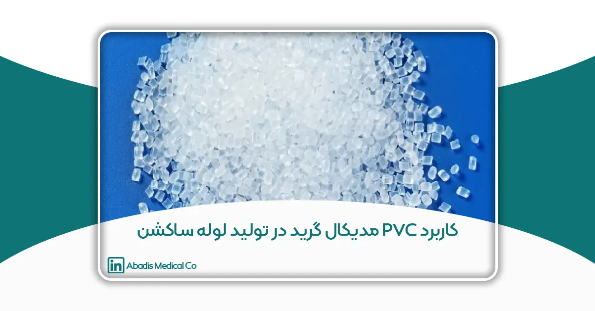
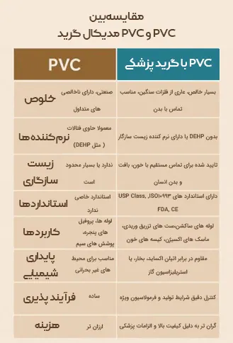
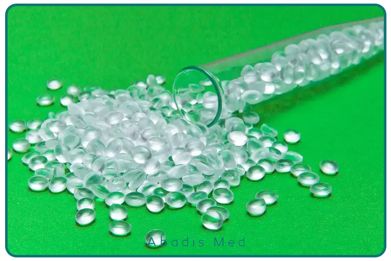

مقدمه
در صنعت تجهیزات پزشکی، انتخاب مواد اولیهای که هم از نظر عملکردی مؤثر باشند و هم از نظر بهداشتی ایمن باشند اهمیت بالایی دارد. یکی از موادی که طی دهههای اخیر جایگاه ویژهای در تولید لوازم مصرفی پزشکی پیدا کرده، PVC مدیکال گرید (پلیوینیل کلراید درجه پزشکی) است. این ماده به دلیل خواص خاص فیزیکی، شیمیایی و زیستی خود، گزینهای بسیار مناسب برای ساخت تجهیزات پزشکی یکبار مصرف مانند لوله ساکشن (ساکشن تیوب) به شمار میرود.
در این مقاله که توسط مجموعهی ما در «مخازن طبی آبادیس» تهیه شده، به بررسی دقیق ویژگیها و کاربردهای PVC مدیکال گرید در تولید ساکشن تیوب میپردازیم، شرکتهای معتبر جهانی استفادهکننده از آن را معرفی میکنیم و دلایل انتخاب این ماده در تولیدات خودمان را شرح میدهیم.
PVC مدیکال گرید چیست؟
PVC مدیکال گرید نوعی پلیمر ترموپلاستیک است که بهطور خاص برای استفاده در کاربردهای پزشکی و دارویی طراحی شده است. این ماده از مونومر وینیل کلراید ساخته میشود، اما ترکیب شیمیایی آن به گونهای اصلاح شده است که برای تماس مستقیم با بدن ایمن باشد. به این منظور از پلاستیسایزرهای زیستسازگار و فاقد DEHP مانند TOTM و DINCH استفاده میشود. آنچه PVC مدیکال گرید را از دیگر انواع PVC متمایز میکند، ترکیب خاص آن و رعایت دقیق استانداردهای بهداشتی و زیستسازگار است. این ماده با بدن انسان کاملاً سازگار بوده، غیرسمی است و هیچگونه واکنش آلرژیک یا التهابی ایجاد نمیکند. ویژگیهای منحصربهفرد PVC مدیکال گرید، آن را به گزینهای ایدهآل برای تولید تجهیزات پزشکی تبدیل کرده است. انعطافپذیری بالا، شفافیت، قابلیت استریلپذیری، پایداری شیمیایی و دوام مناسب در برابر تغییرات دما و محیطی از جمله مزایای اصلی این ماده هستند.
همچنین، PVC پزشکی برخلاف برخی پلاستیکهای صنعتی، فاقد ترکیبات مضر مانند فتالاتهای خطرناک یا لاتکس حساسیتزا است. این ویژگی بهویژه در محصولاتی که با جریان هوا یا خون در تماس مستقیم هستند، اهمیت بالایی دارد
. PVC پزشکی ویژگیهایی دارد که آن را برای استفاده ایمن و مؤثر در تجهیزات پزشکی مناسب میکند، از جمله:
- زیستسازگاری کامل: تماس مستقیم با بافتها و مایعات بدن بدون تحریک یا ایجاد حساسیت
- انعطافپذیری و نرمی بالا: ایدهآل برای عبور از مسیرهای باریک مانند نای و رگها
- شفافیت: امکان مشاهده مایعات عبوری از درون لوله
- مقاومت شیمیایی: پایدار در برابر داروها و مواد ضدعفونیکننده
- قابلیت استریلسازی: با اتوکلاو، گاز اتیلن اکساید یا پرتودهی
- طول عمر بالا و پایداری محیطی
این جدول مقایسهای تفاوتهای کلیدی بین PVC معمولی و PVC گرید پزشکی را نشان میدهد. همانطور که مشخص است، PVC مدیکال گرید دارای خلوص بالاتر، زیستسازگاری مناسب برای تماس با بدن انسان، فاقد مواد شیمیایی مضر مانند DEHP و منطبق با استانداردهای بینالمللی مانند ISO10993و FDA است. همین ویژگیها آن را به گزینهای ایدهآل برای ساخت لوازم پزشکی مانند لولههای ساکشن، ستهای تزریق و کیسههای خون تبدیل کرده است.

استانداردها و تاییدیههای جهانی
PVC مدیکال گرید باید از نظر ایمنی و کیفیت تحت آزمایشها و گواهینامههای معتبر بینالمللی قرار گیرد، از جمله:
- ISO 10993 (زیستسازگاری مواد پزشکی)
- USP Class VI (استاندارد دارویی ایالات متحده)
- FDA 21 CFR Part820 (استاندارد تجهیزات پزشکی در آمریکا)
چرا PVC برای ساکشن تیوب(لوله ساکشن) مناسب است؟
ساکشن تیوب(لوله ساکشن) یکی از تجهیزات مهم و حیاتی در مراکز درمانی است که برای تخلیه ترشحات، خون، خلط و مایعات از مسیرهای تنفسی یا حفرههای بدن به کار میرود. از آنجایی که این لوله به طور مستقیم با بدن و دستگاههای مکش در تماس است، مواد اولیه استفاده شده در تولید آن باید دارای ویژگیهای بهداشتی و فنی خاصی باشند. در این زمینه، PVC مدیکال گرید بهترین انتخاب برای ساخت ساکشن تیوب(لوله ساکشن) محسوب میشود.
یکی از دلایل اصلی این انتخاب، انعطافپذیری بالای PVC است که باعث میشود لوله به راحتی از مسیرهای باریک بدن عبور کند بدون اینکه به بافتها آسیبی برساند یا بیمار را دچار ناراحتی کند. علاوه بر این، PVC مدیکال گرید از نوعی پلاستیک شفاف است که امکان مشاهده ترشحات و مایعات درون لوله را به پزشک و پرستار میدهد تا بتوانند بهخوبی فرایند ساکشن را کنترل کنند.
ویژگی مهم دیگر، زیستسازگاری و ایمنی این ماده است. PVC پزشکی مطابق با استانداردهای جهانی ساخته شده و کاملاً غیرسمی است؛ به همین دلیل تماس مستقیم آن با بدن باعث ایجاد حساسیت یا واکنشهای آلرژیک نمیشود. همچنین این ماده در برابر مواد شیمیایی، داروها و ضدعفونیکنندهها مقاومت خوبی دارد و در تماس مداوم با آنها دچار آسیب نمیشود.
از نظر بهداشتی، قابلیت استریلسازی لولههای ساخته شده از PVC مدیکال گرید بسیار حائز اهمیت است. این لولهها را میتوان با روشهای مختلفی مانند اتوکلاو، گاز اتیلن اکساید و یا پرتودهی گاما استریل کرد که این ویژگی برای حفظ سلامت بیماران ضروری است.
در کنار همه این مزایا، قیمت مناسب و امکان تولید انبوه با کیفیت بالا، PVC مدیکال گرید را به گزینهای مقرونبهصرفه و محبوب برای تولیدکنندگان تجهیزات پزشکی تبدیل کرده است. همچنین این ماده به راحتی قابلیت اتصال به تجهیزات دیگر مانند کانکتورها و دستگاههای مکش را دارد و در برابر فشار و کشش مقاومت خوبی نشان میدهد.
در نتیجه، استفاده از PVC مدیکال گرید در تولید لوله ساکشن، علاوه بر تامین نیازهای فنی و بهداشتی، تضمینی برای کیفیت، ایمنی و راحتی بیماران است. به همین دلیل بیشتر برندهای معتبر جهانی در ساخت این محصولات، به این ماده اعتماد دارند و از آن بهره میبرند.
شرکتهای جهانی استفادهکننده از PVC مدیکال گرید
امروزه بسیاری از شرکتهای معتبر و پیشرو در صنعت تجهیزات پزشکی در سراسر جهان، از PVC مدیکال گرید به عنوان مادهای قابل اعتماد، ایمن و بهصرفه در تولید محصولات مختلفی همچون لولههای ساکشن، کاتترها، کیسههای خون و تجهیزات تنفسی استفاده میکنند. این ماده به دلیل ویژگیهای منحصربهفردش، به استاندارد طلایی در بسیاری از کاربردهای پزشکی تبدیل شده است.
در ادامه به معرفی چند شرکت مهم در این حوزه میپردازیم:
- Terumo Corporation (ژاپن): این شرکت ژاپنی یکی از بزرگترین تولیدکنندگان تجهیزات پزشکی در جهان است و از PVC مدیکال گرید در تولید انواع کاتترها، ستهای تزریق و سیستمهای انتقال خون استفاده میکند. تمرکز Terumo بر ایمنی بیمار و کیفیت بالا، باعث شده تا انتخاب PVC پزشکی در محصولات مصرفیاش کاملاً منطقی و استاندارد باشد.
- Henso Medical (چین): شرکت Henso تولیدکنندهی تخصصی انواع لوازم مصرفی پزشکی مانند کاتترهای ساکشن است و محصولات خود را با استفاده از PVC مدیکال گرید و بر اساس استانداردهای بینالمللی طراحی میکند. انعطافپذیری بالا، شفافیت و قابلیت استریلسازی از ویژگیهای بارز این محصولات است.
- Tekni-Plex Healthcare (آمریکا): این شرکت تأمینکننده مواد اولیه برای تجهیزات پزشکی است و ترکیبات خاصی از PVC مدیکال گرید را تولید میکند که مناسب برای فرآیندهای استریلسازی با گاز، بخار یا اشعه بوده و از نظر زیستسازگاری کاملاً تایید شدهاند.
- Manner Polymers (آمریکا): یکی از تولیدکنندگان معتبر ترکیبات PVC پزشکی که محصولات آن مطابق با استانداردهای USP Class VI وISO 10993 هستند و در تولید لولههای تنفسی، ماسکها و انواع لولههای پزشکی مورد استفاده قرار میگیرند.
- Xenco Medical (آمریکا): شرکتی نوآور در تولید ابزارهای جراحی یکبار مصرف از پلیمرهای پیشرفته، که استفاده از مواد زیستسازگار و بیخطر را در اولویت قرار داده است. بسیاری از ابزارهای تولیدی این برند، مبتنی بر فناوریهای پلیمری از جمله PVC مدیکال گرید هستند.
استفاده شرکتهای ایرانی از PVC مدیکال گرید در تولید تجهیزات پزشکی
در کنار شرکتهای بینالمللی معتبر، چندین شرکت ایرانی پیشرو نیز با استفاده از PVC مدیکال گرید توانستهاند جایگاه ویژهای در بازار تجهیزات پزشکی پیدا کنند. استفاده از این مادهی باکیفیت، تضمینی برای تولید محصولات پزشکی ایمن و استاندارد است. از مهمترین این شرکتها میتوان به موارد زیر اشاره کرد:
- شرکت فارمد پلاست: یکی از تولیدکنندگان شناختهشده تجهیزات پزشکی که در مواد اولیه PVC مدیکال گرید استفاده میکند و با رعایت استانداردهای بینالمللی، کیفیت محصولات خود را تضمین میکند.
- شرکت گرانول محصول: این شرکت نیز در زمینه تولید مواد اولیه پزشکی و PVC مدیکال گرید فعالیت می کند.

چرا شرکت مخازن طبی آبادیس از PVC مدیکال گرید استفاده میکند؟
در شرکت مخازن طبی آبادیس، انتخاب مواد اولیه همواره بر اساس ایمنی، کیفیت و تطابق با استانداردهای جهانی صورت میگیرد. این شرکت در تولید لولههای ساکشن خود، از PVC مدیکال گرید بهره میبرد که مزایای متعددی برای کاربران، بیماران و مراکز درمانی به همراه دارد.
از جمله دلایل استفاده آبادیس از PVC مدیکال گرید میتوان به موارد زیر اشاره کرد:
- زیستسازگاری کامل و بیخطر بودن در تماس با بدن انسان
- نرمی و انعطافپذیری ایدهآل برای ورود آسان به مجاری تنفسی
- شفافیت بالا جهت مشاهده مایعات در حال ساکشن
- امکان استریلسازی با روشهای مختلف و حفظ کیفیت پس از آن
- دوام بالا و قیمت مقرونبهصرفه در مقایسه با سایر پلیمرهای پزشکی مانند سیلیکون
آبادیس با تکیه بر تجربه، تحقیق و انتخاب مواد اولیهای که مطابق با استانداردهای جهانی مانند ISO و CE هستند، تلاش میکند محصولاتی ایمن، کارآمد و قابل اعتماد برای جامعه پزشکی کشور و صادرات به بازارهای منطقهای و جهانی تولید کند.
نتیجه گیری
با نگاهی جامع به ویژگیهای فنی، زیستی و عملکردی PVC مدیکال گرید، بهوضوح مشخص میشود که این ماده یکی از بهترین انتخابها برای تولید تجهیزات پزشکی یکبار مصرف، بهویژه لولههای ساکشن(ساکشن تیوب) است.
ویژگیهایی مانند انعطافپذیری تنظیمپذیر، زیستسازگاری تأییدشده، مقاومت بالا در برابر انواع روشهای استریلسازی (گاما، اتوکلاو، گاز EO) و همچنین قابلیت شفافیت بالا، PVC را به گزینهای بیرقیب برای تولیدکنندگان تجهیزات پزشکی تبدیل کرده است.
این خواص نه تنها از دیدگاه ایمنی برای بیماران اهمیت دارند، بلکه برای تولیدکنندگان نیز مزایای زیادی دارند. از جمله:
- فرآیندپذیری عالی در خطوط تولید اکستروژن و تزریق
- امکان ترکیب با افزودنیهای فاقد DEHP مانند TOTM برای افزایش زیستسازگاری
- کاهش هزینههای تولید نسبت به مواد جایگزین مانند سیلیکون یا پلیاورتان
در سطح جهانی، بسیاری از شرکتهای مطرح مانند Terumo (ژاپن)، Tekni-Plex (آمریکا)، Henso Medical (چین) و Xenco Medical (آمریکا) از این ماده در تولید تجهیزات پیشرفته پزشکی استفاده میکنند. این نشاندهندهی پذیرش جهانی و اعتبار بالای PVC مدیکال گرید در میان متخصصین و فعالان صنعت پزشکی است.
در ایران نیز، شرکت مخازن طبی آبادیس با بهرهگیری از استانداردهای بینالمللی و فناوری روز، از PVC مدیکال گرید در تولید لولههای ساکشن یکبار مصرف پزشکی استفاده میکند. این انتخاب بر پایه تحقیقات علمی، تجربه میدانی و رعایت اصول ایمنی و بهداشت انجام شده است.
با افزایش نیاز به تجهیزات پزشکی با کیفیت بالا و ایمن، بهویژه پس از همهگیریهای جهانی، اهمیت مواد اولیه استاندارد بیش از پیش روشن شده است. PVC مدیکال گرید با تطابق بالا با الزامات بهداشتی و عملکردی، جایگاه خود را بهعنوان یک ماده استراتژیک در صنعت تجهیزات پزشکی تثبیت کرده است.
از اینرو میتوان گفت که آیندهی تولید لوازم پزشکی، بهویژه در حوزههایی مانند تجهیزات تنفسی، کاتترها، لولههای ساکشن و وسایل انتقال مایعات، بهطور مستقیم با توسعه و استفاده هوشمندانه از مواد پیشرفتهای مانند PVC مدیکال گرید گره خورده است.
References
[1] RAUMEDIC, “The important role of PVC in medical devices and applications,” [Online]. Available: https://www.raumedic.com/us/insights/the-important-role-of-pvc-in-medical-devices-and-applications. [Accessed: May 28, 2025].
[2] European Council of Vinyl Manufacturers (ECVM), “PVC in healthcare,” [Online]. Available: https://pvc.org/pvc-applications/pvc-in-healthcare/. [Accessed: May 28, 2025].
[3] Kent Elastomer, “Medical grade PVC tubing benefits and uses,” [Online]. Available: https://www.kentelastomer.com/pvc-benefits-uses/. [Accessed: May 28, 2025].
[4] INEOS Compounds, “PVC medical products,” [Online]. Available: https://www.ineos.com/businesses/ineos-enterprises/businesses/ineos-compounds/markets/pvc-medical-products/. [Accessed: May 28, 2025].
[5] M. Ionescu et al., “Selecting medical grade polymers and testing for achieving antibacterial devices tubular prosthetic,” ResearchGate, 2013.
[6] J. Smith et al., “Surface modification of polyvinylchloride for manufacturing advanced catheters,” ResearchGate, 2020. [Online].